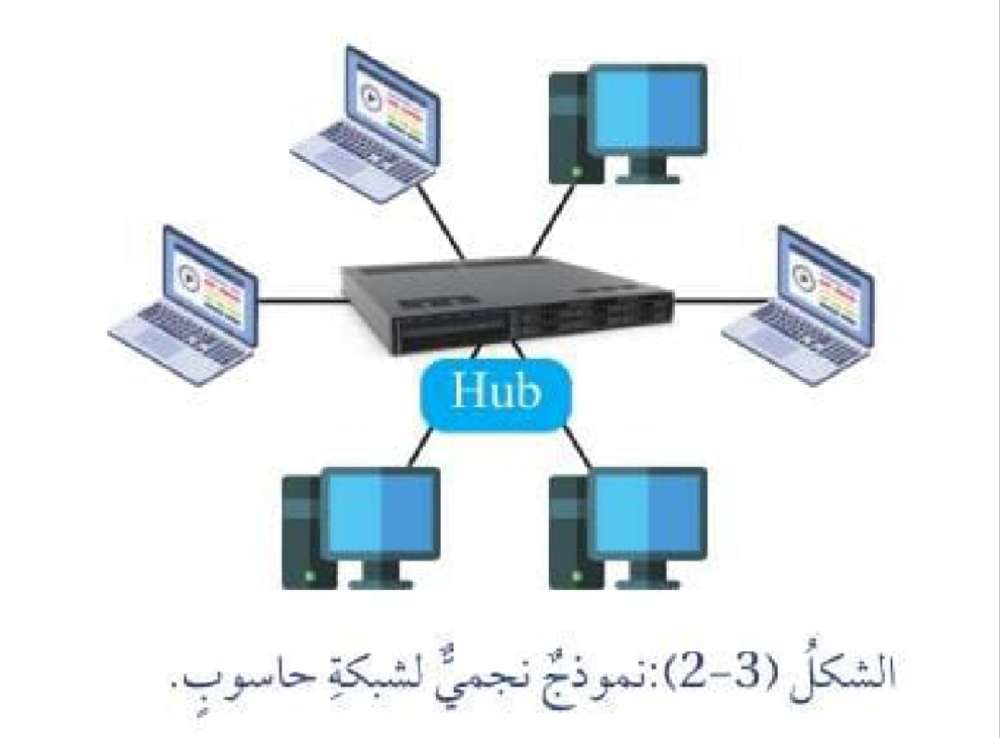
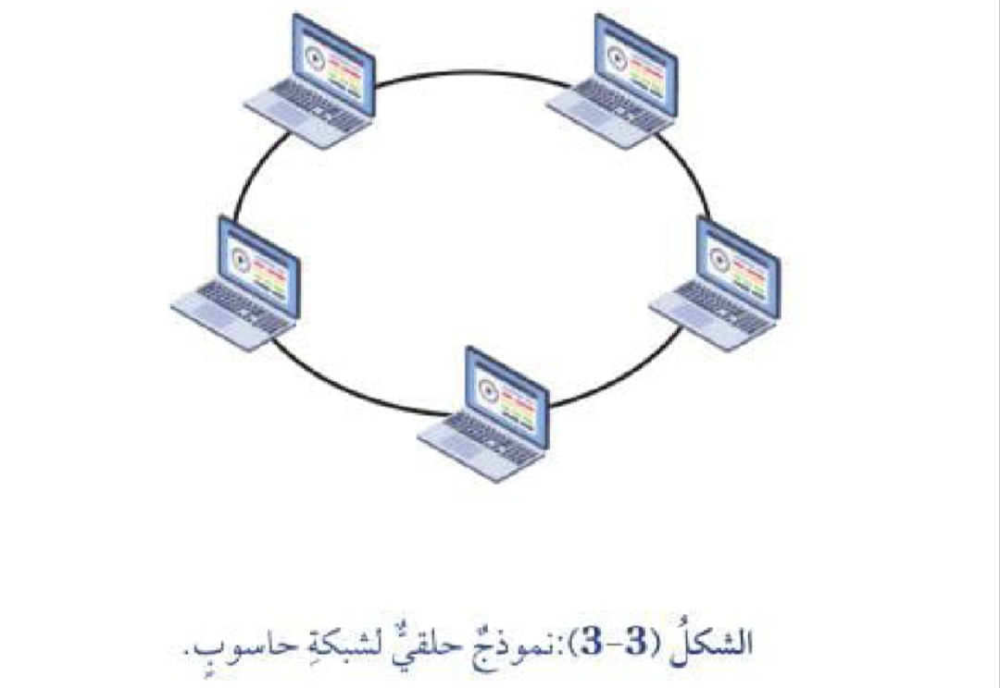
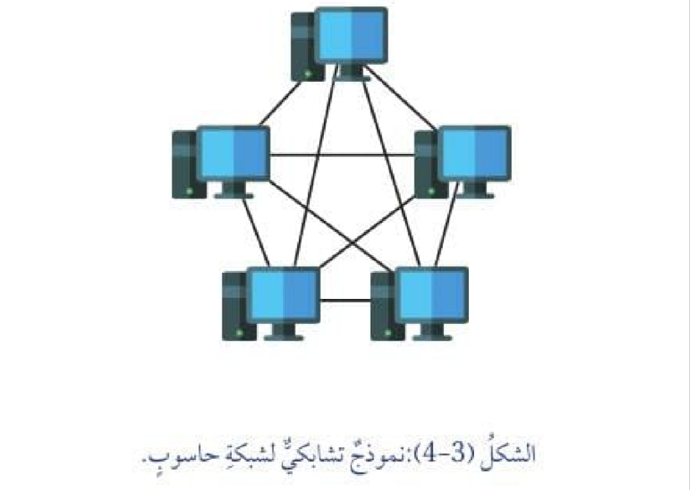

الدرس الثالث: نماذج الربط في الشبكات السلكية
Computer Networks Topologies
المهارات الرقمية - الصف السابع
🔊 القراءة الصوتية للدرس
اضغط على «قراءة الدرس» للاستماع إلى محتوى الدرس.
نموذج ربط الشبكة السلكية (Network Topology)
طريقةً تنظيمية لترتيب عملية الربط بين أجهزة الحاسوب في الشبكة.
- تتعدد نماذج الربط في شبكات الحاسوب، وتختلف في ما بينها من حيث طريقة الربط والفاعلية، والتكلفة وآلية نقل البيانات.
نماذج الربط الخاصة بشبكات الحاسوب
- النموذج الخطي (Bus Topology).
- النموذج النجمي (Star Topology).
- النموذج الحلقي (Ring Topology).
- النموذج التشابكي (Mesh Topology).
أولًا: النموذج الخطي (Bus Topology)
الشكل العام للنموذج الخطي
نموذج تتصل فيه جميع أجهزة الشبكة بخط اتصال رئيس يُسمّى (BUS). ولهذا الخط نقطة بداية ونقطة نهاية (Terminator).
آلية عمل النموذج الخطي (Bus Topology)
طريقة نقل البيانات في النموذج
تتصل فيه جميع أجهزة الشبكة بخط اتصال رئيس يُسمى (BUS). ولهذا الخط نقطة بداية ونقطة نهاية (Terminator)؛ فعند إرسال بيانات من أحد أجهزة الحاسوب إلى جهاز آخر، فإنَّ البيانات تسري على طول خط الاتصال الرئيس، ويتحقَّقُ كلُّ جهاز حاسوب إذا كانَتْ هذه البيانات مُوجَهَةً إِلَيْهِ أمْ لَا. فإذا كانَتْ كذلك، صدر أمر بالموافقة على تسلم البياناتِ، وَإِلَّا فَإِنَّها تُمرّرُ إلى جهاز الحاسوب التالي في الشبكة.

مميزات النموذج الخطي
- سهولة التركيب والكلفة القليلة.
- والقابلية للتوسع بإضافة أجهزة جديدة.
أبرز عيوب النموذج الخطي
- توقف الشبكة كلها عن العمل إذا تعطل خط الاتصال الرئيس.
- وعدم مناسبته للشبكات الكبيرة؛ إذْ يتسبب توسيع الشبكة – بإضافة جهاز جديد إليها - في تباطؤ أدائها، والحد من كفاءتها وفاعليتها.
ثانيًا: النموذج النجمي (Star Topology)
الشكل العام للنموذج النجمي
نموذج تتصل فيه جميع الأجهزة فى الشبكة بجهاز مركزي واحدٍ (قد يكونُ مُوزّعًا (Hub) أو مُحوّلًا (Switch))، يتفرّعُ مِنْهُ سلك مستقل لكل جهاز، فيكون أشبه بالنجمة.

آلية العمل في النموذج النجمي (Star Topology)
طريقة نقل البيانات في النموذج
وفيه تمر جميع البياناتِ المُرسَلة من جهاز إلى آخر عبر الجهاز المركزى، ثم يعيد هذا الأخير إرسال البيانات إلى الجهاز المستقبل.
مميزات النموذج النجمي
- ببساطة التركيب.
- وسهولة تحديد الأخطاء في الشبكة.
- وعدم تأثر الشبكة إذا حدث عطل في أحد الأجهزة المرتبطة بها.
أبرز عيوب النموذج النجمي
- فتتمثل في توقف الشبكة كلها عن العمل إذا تعطل الجهاز المركزي.
- وصعوبة توسيع الشبكة بإضافة أجهزة جديدة.
- وكلفته المرتفعة نسبيًا؛ إذ يتطلّب تركيبه استخدام كثير من الأسلاك الطويلة.
ثالثًا: النموذج الحلقي (Ring Topology)
الشكل العام للنموذج الحلقي
نموذج يرتبط فيه طرفا كل جهاز في الشبكة بجهازين آخرين أو في الاتجاهين (مع عقارب الساعة وعكس عقارب الساعة) فيظهرُ النموذج في صورة حلقة دائرية.

آلية عمل النموذج الحلقي (Ring Topology)
طريقة نقل البيانات في النموذج
وفيه تنتقل البيانات من الجهاز المُرسل إلى الجهاز المستقبل مرورًا بجميع الأجهزة الموجودة بينهما في اتجاه واحد فقط، ثم يعيد كل جهاز إرسال البيانات حتى تصل إلى الجهاز المستقبل.
مميزات النموذج الحلقي (Ring Topology)
- ببساطة التركيب.
- والقدرة على نقل البيانات فى اتجاه واحد؛ ما يمنع التداخل في ما بينها.
عيوب النموذج الحلقي (Ring Topology)
فتتمثل فى توقف الشبكة كلها عن العمل إذا تعطل جهاز واحد في النموذج في كلا المسارين.
رابعًا: النموذج التشابكي (Mesh Topology)
الشكل العام للنموذج التشابكي
نموذج يتصل فيه كل جهاز في الشبكة بجميع الأجهزة الأخرى بواسطة كبل مستقل؛ ما يُشكل العديد من المسارات التي تتيحُ انتقال البيانات من جهاز إلى آخر.
طريقة نقل البيانات في النموذج
يحتوي النموذج على العديد من المسارات التي تتيح انتقال البيانات من جهاز إلى آخر.

مميزات النموذج التشابكي (Mesh Topology)
- احتوائه على العديد من مسارات الاتصال، بحيث إذا تعطل اتصال في مسار محدد، أمكن استخدام مسار بديل للاستمرار في عمل الشبكة.
- كذلك يمتاز النموذج بمرونة كبيرة.
- ويحظى بموثوقية عالية.
لاحتوائه على العديد من مسارات الاتصال، بحيث إذا تعطل اتصال في مسار محدد، أمكن استخدام مسار بديل للاستمرار في عمل الشبكة.
عيوب النموذج التشابكي
- کلفته المرتفعة جدا.
- وصعوبة إعداده وتركيبه؛ إذ يتطلب ذلك استخدام العديد من الأسلاك والمنافذ.